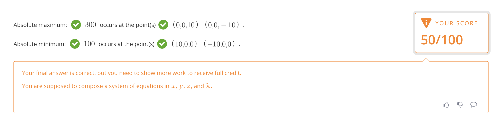

Problem 1

- Type: Misleading
- Degree:
- Reason: Exclamation marks represent some errors in the work a student shows.
Once students encounter them, they are supposed to determine, and backtrack to, where the mistake was made.
Because of this, many students end up not submitting their answers; However, these answers may very well be correct.
An easy fix to this is for the Gradarius developers to look into why such bugs are happening and fix them accordingly.
Problem 2
- Type: Indication is not clear
- Degree:

- Reason: Despite the formula being evidently correct, this error indication tells the student that the highlighted expression is invalid.
However, Gradarius still recognizes the expression on top for a reasoning that is unbeknownst to the student.
Problem 3

- Type: Limit on Number of Attempts
- Degree:
- Reason: Some courses offer what is known as an "attempt limit." This does what it sounds like it does.
This is an understandable feature in terms of grading, but does not allow the student to
better his/herself since the problem becomes inaccessible after the number of attempts is too high.
However, sometimes students can figure out the correct answers after three times, but they can not do it again due to the attempts limit.
This can be fixed by only grading the first few attempts for record purposes while still allowing the student to improve his or her work.
Problem 4

- Type: Inconvenient Operation
- Degree:
- Reason: Due to the unnecessary difficulty of creating expresisons in Gradarius, some students simply
do the work on paper and then submit their answers. However, Gradarius requires students to show
certain steps to get full credit for a problem. This can be fixed in two ways:
-
Making Gradarius more optimized for user intuitive design.
-
Getting Rid of this feature.
Number 2 should not be preferenced though, as this feature is handy to show that
students truly understand the material.